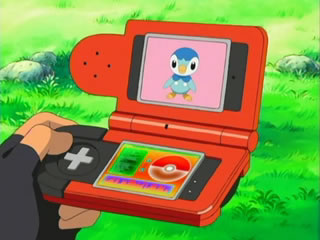

Personal website to showcase skills and abilities.
Personal website to showcase skills and abilities.

Created in a team of four people, Nosophobic is a webabb used to show prevelance of various diseases throughout the United States, based on government data. Built using Java, HTML/CSS, Javascript, and Google Maps Javascript API.

A bot to be used with the Discord chat software that emulates the Pokedex from the Pokemon series of games. By typing !pokebot (pokemon name), the bot searches for the pokemon in serebii.net and pulls the specifed pokemon's stats and image.